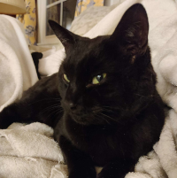

Site History
Music Wars began as a site for showcasing some of the more visual aspects of Star Wars music, such as album covers and track breakdowns in Audacity. However, it has quickly blossomed into a fully-featured site, with reviews and news, and everything in between. We hope you enjoy your time here!
Contributors
enderdrag64 - Main Content Lead
|
I am enderdrag64, and I am proud to contribute content to the internet. I am a huge fan of film music, some of my favorite composers include John Williams, John Powell, and Bear McCreary. I'm also a huge Star Wars fan, and I'm especially interested in documenting production information regarding how the films were made. If you read any of my works for very long, you'll likely encounter something related to at least one of these topics. Other than this blog site, I'm also active on some other forums online, including the John Williams Fan Network soundtrack discussion forum. I also have accounts on The Replica Prop Forums, and TheForce.net's Jedi Council Forums, although I'm less active on those. Lastly, if you're wondering what my username means - it's actually a relic of my middle school self trying to choose a Minecraft username within the character restriction of the time, hence why the "on" is cut off in "Ender Dragon". If I remember correctly, I chose the number 64 to append at the end because of 64-bit computer processors. |
c_rom.exe - Editor
|
Hi, I'm c_rom.exe and I'm a go-getter! I am this blog's editor. I love to help enderdrag64 edit his work and make all the content sound more professional. He can write for ages but sometimes needs some assistance in making it readable and concise for other people. |
Scott - Support Cat <3
|  |
Meowwwwwwwwww Translation: Please give me treats, I work very hard to be cute and provide motivation and inspiration every day. |
© 2024 by enderdrag64-design. All rights reserved.